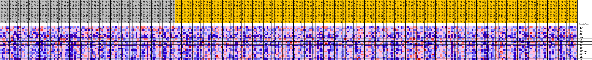
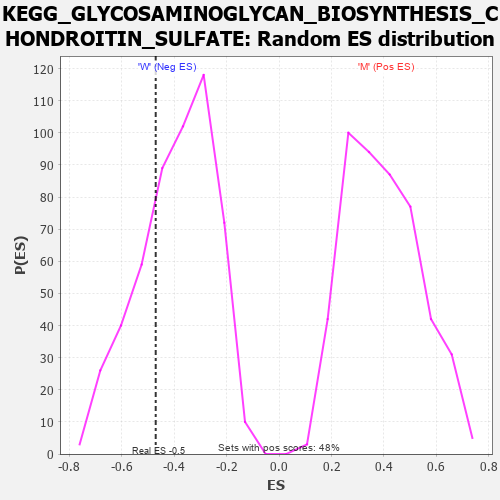

Profile of the Running ES Score & Positions of GeneSet Members on the Rank Ordered List
| Dataset | MUC16.MUC16.cls#M_versus_W.MUC16.cls#M_versus_W_repos |
| Phenotype | MUC16.cls#M_versus_W_repos |
| Upregulated in class | W |
| GeneSet | KEGG_GLYCOSAMINOGLYCAN_BIOSYNTHESIS_CHONDROITIN_SULFATE |
| Enrichment Score (ES) | -0.47056013 |
| Normalized Enrichment Score (NES) | -1.203554 |
| Nominal p-value | 0.27552986 |
| FDR q-value | 1.0 |
| FWER p-Value | 0.985 |
| PROBE | DESCRIPTION (from dataset) | GENE SYMBOL | GENE_TITLE | RANK IN GENE LIST | RANK METRIC SCORE | RUNNING ES | CORE ENRICHMENT | |
|---|---|---|---|---|---|---|---|---|
| 1 | CHPF2 | na | 3263 | 0.092 | -0.0066 | No | ||
| 2 | CHPF | na | 3451 | 0.090 | 0.0409 | No | ||
| 3 | B3GAT2 | na | 4876 | 0.071 | 0.0553 | No | ||
| 4 | B3GAT3 | na | 9160 | 0.032 | -0.0043 | No | ||
| 5 | XYLT1 | na | 9220 | 0.031 | 0.0123 | No | ||
| 6 | CHST11 | na | 12285 | 0.009 | -0.0380 | No | ||
| 7 | UST | na | 12441 | 0.008 | -0.0362 | No | ||
| 8 | B3GAT1 | na | 16751 | -0.009 | -0.1090 | No | ||
| 9 | B4GALT7 | na | 19442 | -0.023 | -0.1448 | No | ||
| 10 | B3GALT6 | na | 19634 | -0.024 | -0.1350 | No | ||
| 11 | CHSY3 | na | 24835 | -0.046 | -0.2032 | No | ||
| 12 | DSE | na | 27704 | -0.056 | -0.2232 | No | ||
| 13 | CHST13 | na | 31471 | -0.068 | -0.2525 | No | ||
| 14 | CHSY1 | na | 37077 | -0.086 | -0.3051 | No | ||
| 15 | CHST14 | na | 46219 | -0.119 | -0.4032 | Yes | ||
| 16 | CHST3 | na | 47513 | -0.125 | -0.3556 | Yes | ||
| 17 | CSGALNACT2 | na | 48174 | -0.128 | -0.2947 | Yes | ||
| 18 | CSGALNACT1 | na | 48437 | -0.130 | -0.2258 | Yes | ||
| 19 | CHST12 | na | 49203 | -0.134 | -0.1633 | Yes | ||
| 20 | CHST7 | na | 49687 | -0.138 | -0.0940 | Yes | ||
| 21 | XYLT2 | na | 50026 | -0.140 | -0.0207 | Yes | ||
| 22 | CHST15 | na | 54391 | -0.204 | 0.0159 | Yes |

